Découvrir
Découvrez la ville de Bruxelles.
Bruxelles ou la ville de Bruxelles est une commune de Belgique de 183 287 habitants, capitale de la Belgique, de la Communauté française, de la Communauté flamande ainsi que le siège de plusieurs institutions de l'Union européenne. La commune porte le titre honorifique de ville.
